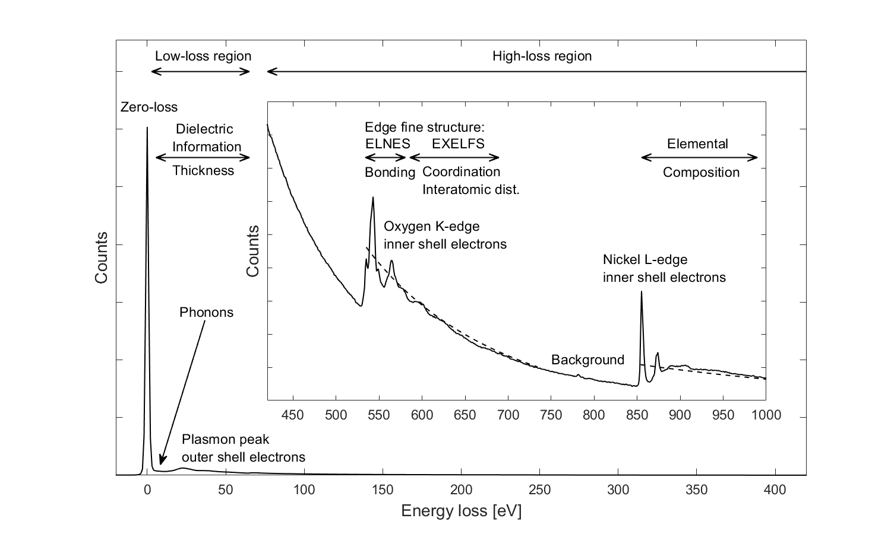

|
|
Advanced Solid State Physics | |
|
|
Electron Energy Loss Spectroscopy - EELSElectron energy loss spectroscopy is an analytical technique used to gain elemental, chemical or dielectric information from samples. It is typically performed in scanning transmission electron microscopes (STEM) with beam energys of $60-200 ~ keV$. In this configuration, the energy loss of the transmitted electron beam is analyzed, which originates from inelastic scattering in the sample. The energy loss is hereby measured by passing the transmitted beam trough a magnetic prism, located below the specimens chamber. This prism disperses the beam according to its kinetic energy, which is directly related to the energy loss due to prior interactions with the sample. The EELS spectrum typically covers the range from $0$ to $3~keV$ loss, with an energy resolution determined by the initial energy spread of the beam $\Delta E \approx 0.1 - 3~eV$. EEL spectra are generally divided into two regions. A low-loss-region from $0$ to $50~eV$ and a high-loss-region with losses greater than $50~eV$. The amplitude of the high loss spectrum is generally amplifyed by a factor of $100 - 1000$, as the probability for scattering at these energys is much lower compared to the low-loss region. This scattering probability is gerneally described by the differential cross-section $\frac{d \sigma}{d E}$. The following figure shows an overview of the different excitation sources, which can be seen in an EEL spectrum.  The most prominent feature in the low loss region is the zero loss peak, originating from elastically scattered electrons with no energy loss. Measuring the full width at half maximum of the zero loss peak allows to determine the enrgy resolution of the system. Furthermore, it can be used to estimate the relative sample thickness, by using the log-ratio technique, which bases on a Poisson model for thickness dependant electron scattering. After the zero loss peak, several plasmon peaks could be observed. They originate from the excitation of multiple bulk and surface plasmon in the sample, and occur typically at an integer number of the fundamental plasmon energy $E_p = \hbar \omega_p$. The position of the plasmon peaks could be used to calculate the electron density with the plasma frequency $\omega_P$ \[ \begin{equation} \label{plasmon} \omega_P^2 = \frac{4\pi n e^2}{m} \end{equation} \]The whole low loss region of an EELS spectrum contains also dielectric information about the sample as the differential cross section $\frac{d \sigma}{d E}$ is dependant on $\epsilon(E)$, \[ \begin{equation} \label{cross-section}\frac{d \sigma}{d E} = \frac{2}{\pi a_0 m_0 v^2 n_a} Im \left(\frac{-1}{\epsilon (E)}\right)\ln{\left[1+\left(\frac{\beta}{\theta_E}\right)^2\right]} \end{equation} \]where $a_0$ is the Bohr radius, $v$ the velocity of the electrons, $n_a$ the density of atoms, $\beta$ the collection angle of the electrons and $\theta_E = E/(\gamma m_0 v^2)$ a characteristic scattering angle. The Kramers-Kronig relationships could be exploited to compute the full dielectric function, and therefore also the optical property's of the material. The high-loss region contains information about the elemental composition, bonding and coordination numbers of the elements in the sample. Those property's are all encoded in the structure, and position of the excitation edges. These edges occur when inner shell electrons of the atoms are ionized by the incident electron beam. The critical ionization energy for such an excitation is dependant on the specific element, and the initial state of the core electron. Therefore, excitation edges are a unique signature of the elemental composition of the sample. They are labeled after the initial state of the electron, and usually show up as sudden increase in the EEL spectrum, followed by a decrease in intensity with increasing energy loss. The following figure shows the core loss spectrum of tin, with the $L_3$, $L_2$ and $L_1$ edge, which correspond to excitations from the $2p^{\frac{3}{2}}$, $2p^{\frac{1}{2}}$ and $2s^{\frac{1}{2}}$ states into the unoccupied density of states. The probability for such transitions can be computed using Fermis golden rule and summing over all possible final states $\langle f |$ of the electron: \[ \begin{equation} \label{high_loss_exc} \frac{d^2 \sigma}{d E d \Omega} \approx \sum_f |{\langle f| \exp{(iqr)}|i\rangle|^2} \cdot N_f(E) \end{equation} \]$N_f(E)$ is hereby the solid state DOS. The translation operator $\exp{(iqr)}$ could be expanded as Taylor series for small scattering vectors $q$. In this case, the orthogonality between the different wave-functions $\langle i|$ and $\langle f|$ could be exploited to further simplify the expression: \[ \begin{equation} \label{high_loss_exc2} \frac{d^2 \sigma}{d E d \Omega} \approx \sum_f |{\langle f|qr|i\rangle|^2} \cdot N_f(E) \end{equation} \]Therefore, the transition probability is directly proportional to the unoccupied density of states. Additionally, the dipole selection rules must hold.
view-source:http://lampx.tugraz.at/~hadley/ss2/magnetism/para.php https://web.archive.org/web/20201205225003/https://www.globalsino.com/EM/page3801.html https://eelsdb.eu/wp-content/uploads/2015/09/Dspecshb3tD.msa |